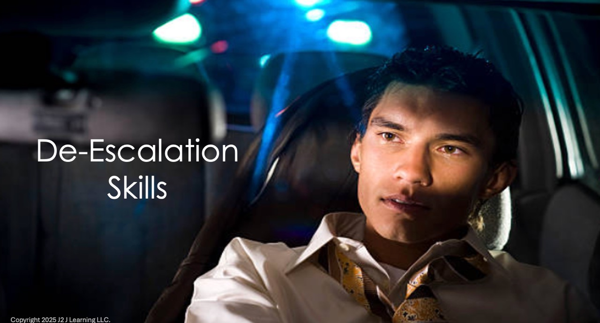
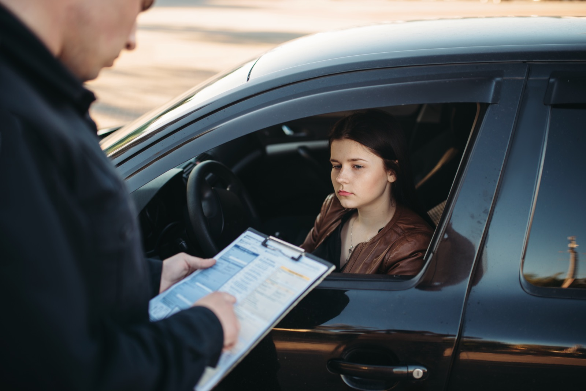
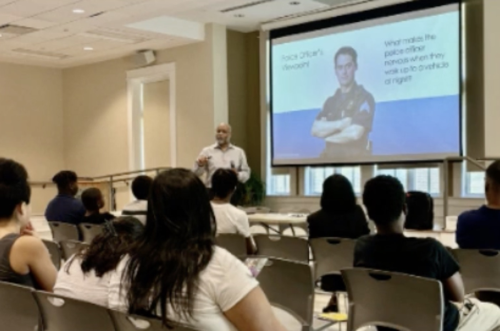
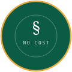

A program of Journey 2 Justice Learning
The Traffic Stop Bootcamp:
Building a Bridge between Your Community and Law Enforcement.
A four-module video course that prepares drivers to handle a traffic stop calmly — what to do, what to say, and what the law allows — so the encounter ends safely for everyone.
- Modules
- 4 on demand
- Total runtime
- Under 90 min
- Pilot session
- Complimentary

Request program access
We'll send the module password and scheduling options.
Program preview
A few minutes on what the bootcamp teaches, and why.
The full four-module library is open to enrolled partners.
Success happens in the first 3 minutes
Anatomy of a Traffic Stop
Almost everything that determines how a stop goes is decided in the first few moments. The program walks through those moments one at a time, so the right response is already familiar when it matters.
Lights behind you
Signal, put your hazard lights on, and choose a well-lit place to pull over. Where you stop is your first decision.
Stopped and still
Engine off, window down, interior lights on so the rear compartment is visible. Hands stay on the wheel.
First contact
The officer speaks first. Answer plainly, keep your voice level, and say what you're about to do before you do it.
Reaching for documents
Name where your license and registration are, then move slowly. No sudden reaches, no surprises.
If the tone shifts
Behaviour that challenges an officer’s authority is what turns a stop into a confrontation. Module three calls it by name.
Ending the stop
Ask whether you're free to go. Note the agency and badge number. Anything you dispute, you dispute on paper, later.



Pilot workshop
Try it with your group before you commit.
Ask about a complimentary pilot session and optional practice workshop.
- A live walkthrough of the program with your members, at no cost
- An optional practice workshop where participants rehearse a stop
- A facilitator guide and discussion prompts you keep either way
Who it's for
Built for the communities that ask for it most.
Journey 2 Justice Learning delivers Traffic Stop Bootcamp through civil rights organizations, youth mentoring groups, and social justice organizations — the groups already doing this work, given training their members can run themselves.
Know-your-rights programming that members can take straight into their own networks.
Small-group workshops with a facilitated discussion after each module.
Training that pairs with existing advocacy work rather than duplicating it.
Evening sessions for families, delivered in the spaces they already trust.
Bring the bootcamp to your community.
Tell us your setting and group size. We'll come back with a schedule, a facilitator guide, and access to the modules.